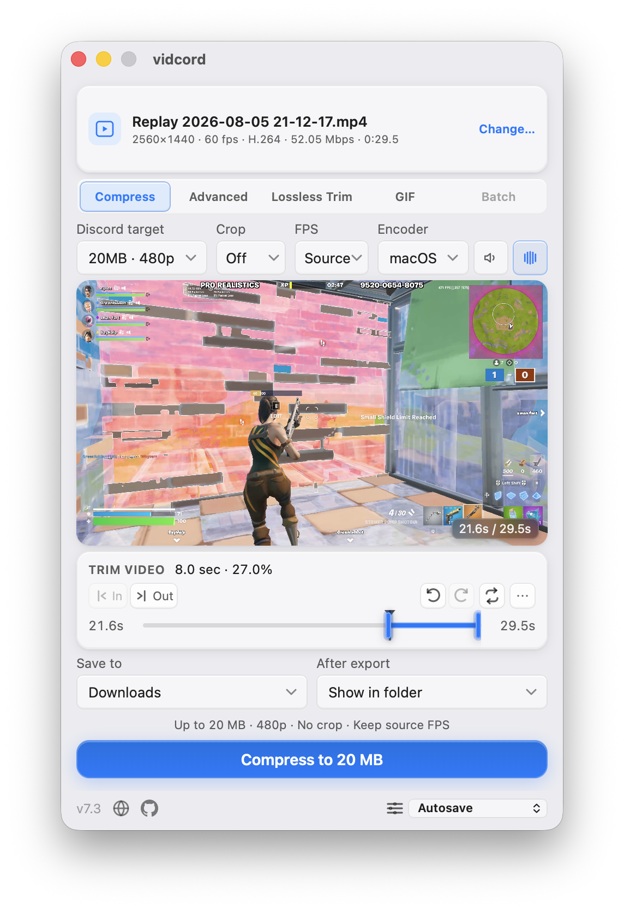
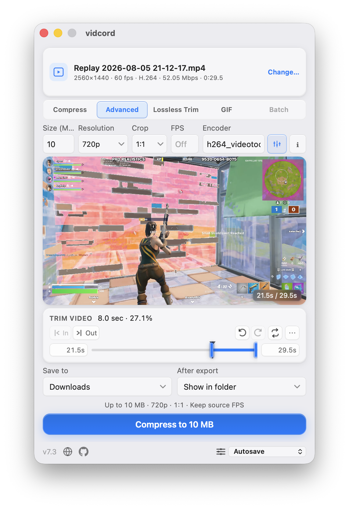
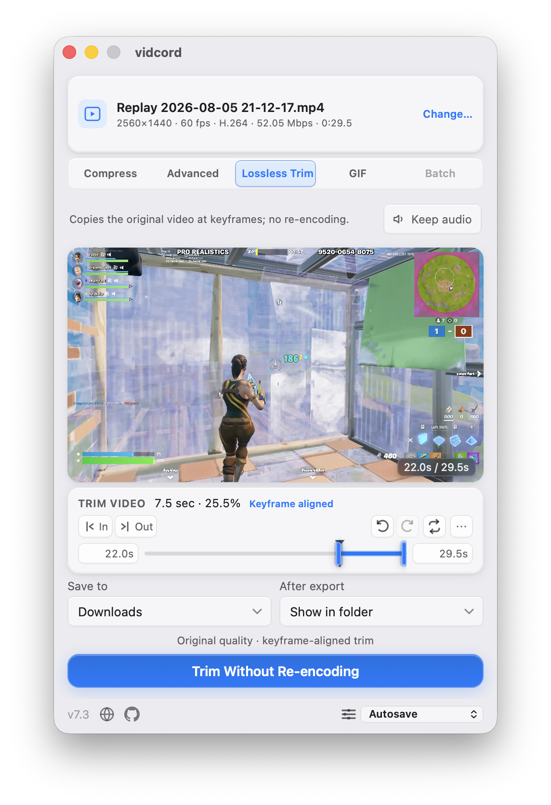
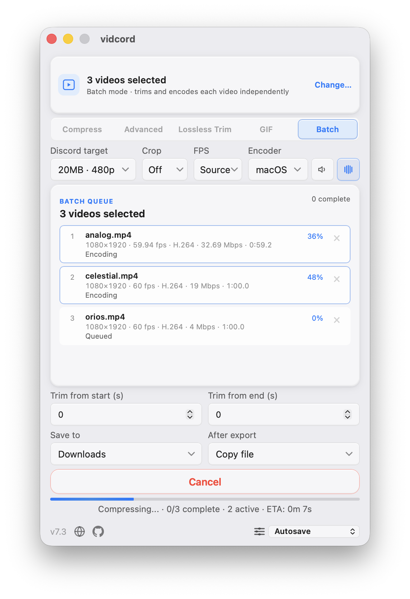
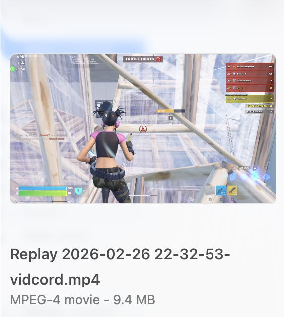

100% local
Your files stay on your device. vidcord never uploads video to a server.
Native desktop video compression for Discord limits.
Compress MP4, MOV, MKV, AVI, WebM, FLV, and WMV files under Discord's 20, 50, 100, or 500 MB limits using the desktop app's system FFmpeg locally. Lossless Trim cuts on keyframes without re-encoding. GIF Mode creates Discord-ready GIFs at 15, 30, or up to 50 FPS.
Select multiple videos in the desktop app to switch automatically to Batch mode, with per-file details, separate start/end trims, and a queue-wide progress estimate.
Need no installation? The browser edition processes files locally with WebAssembly and sends finished exports to your browser downloads.
— downloads
ffmpeg and ffprobe before
compressing videos; the browser editor uses WebAssembly instead.
Detects Windows, macOS, or Linux and selects the latest release asset.

Open the no-install editor when you need a quick export. Your selected files stay in the browser while local FFmpeg WebAssembly handles the encode; finished videos and PNG frame snapshots are downloaded by the browser.
Your files stay on your device. vidcord never uploads video to a server.
Choose a 20, 50, 100, or 500 MB limit and let vidcord calculate the bitrate. GIF Mode supports 5 MB, 10 MB, and 20 MB exports at 15, 30, or up to 50 FPS. Select multiple videos for browser Batch's full-duration profile or desktop Batch's per-file trims.
Scrub, preview, and compress only the range you need. Lossless Trim preserves source streams with keyframe-aligned boundaries. The desktop app offers Lossless Trim when a segment already fits the target, with a clear keyframe warning. Desktop Linux uses FFmpeg frame and filmstrip previews for stable scrubbing; the browser uses its local video preview.
Detects NVENC, AMF, QSV, VAAPI, and VideoToolbox, prefers H.264 hardware on first run, and keeps CPU fallback ready.
Three steps from a large clip—or a batch—to Discord-ready uploads.
Drag and drop or browse in the browser editor; use Open With from Finder or Explorer in the desktop app. Multi-select to activate Batch mode automatically.
Select a Discord size target, cap FPS or remove audio if needed, and preview a single-video range from the playhead. Browser Batch uses one full-duration Compress profile; desktop Batch adds separate start and end trim seconds for every queued video.
Run the local encoder and verify the size. Browser exports download through the browser; desktop exports can use Downloads, the clip folder, a custom folder, or a save prompt. Desktop Batch runs up to two encodes concurrently, estimates the whole remaining queue, continues after individual failures, and can copy or reveal successful outputs as a group.
Both editions include aspect-ratio crop presets, custom size, resolution, FPS, and audio normalization. The desktop app adds encoder selection, source audio-track mixing, saved settings presets, native output preferences, and the size-based Lossless Trim offer. The browser editor uses a fixed libx264 WebAssembly encoder, browser downloads, and browser readable inputs.

Lossless Trim cuts on source keyframes without re-encoding the video. The browser editor copies source streams through WebAssembly and can remove audio without re-encoding; the desktop app also handles native output containers.

GIF Mode swaps in focused controls for animated exports. Choose a Discord Free or Nitro Basic size target and the motion quality you want, then let vidcord optimize the result locally.
Select multiple videos and vidcord probes and encodes each one independently. Browser Batch applies one shared full-duration Compress profile and shows per-file progress plus an aggregate ETA; desktop Batch also supports separate trims, native workers, and native output handling.

These integrations belong to the native desktop app. Start from your file manager and get compressed MP4s in Downloads or another output location. Select multiple files to enter desktop Batch mode automatically. Native notifications mirror vidcord's banners while the app is unfocused; click one to restore and focus it.
Right-click a video and choose vidcord from Open with.

Use Open With in Finder to send a local video straight into vidcord.

Exports use a safe auto-incremented filename in Downloads, beside the clip, or in your saved custom folder. Ask when done opens a save prompt after compression.

Short answers for searchers, crawlers, and anyone checking how vidcord works.
No. The browser edition keeps selected files in the page while FFmpeg WebAssembly runs locally, and the desktop edition runs system FFmpeg locally. Neither edition uploads video, requires an account, or uses telemetry. The app and website request only public release data and aggregate download counts; neither request includes video data.
Yes. Open the browser edition to run FFmpeg WebAssembly locally. Files stay in your browser and exports go to browser downloads. It is a lighter alternative with a fixed WASM encoder and no desktop-only GPU, Open With, native folder, or OS notification integrations.
Both editions cover Discord's current 20 MB, 50 MB, 100 MB, and 500 MB targets. Advanced mode adds custom size, resolution, and typed FPS in both editions; encoder selection and named settings presets are desktop-only. GIF Mode supports 5 MB, 10 MB, and 20 MB exports at 15, 30, or up to 50 FPS.
Yes. In the browser, select two or more files through Browse or drag-and-drop to use one shared full-duration Compress profile with removable queued items, per-file progress, and an aggregate ETA. On desktop, Open With, command-line arguments, and second-instance selections also activate Batch mode with separate start/end trims, up to two native workers, and native output handling.
Yes. Standard mode can leave FPS unchanged or cap it at 24, 30, or 60 FPS. Advanced mode accepts a custom typed value or Off in both editions.
The desktop Linux edition uses FFmpeg to generate filmstrip and frame previews while scrubbing. Live video scrubbing and trim playback are disabled there because WebKitGTK can crash the renderer on some systems; the browser edition uses its local video preview.
The desktop edition does not bundle system FFmpeg: install ffmpeg and
ffprobe and make them available on PATH. The browser edition loads a
fixed FFmpeg WebAssembly build and does not require a system FFmpeg install. See the
desktop package-manager steps if needed.
The site detects your OS and links to the matching latest-release asset. If x64 or ARM64 is unclear, it asks you to choose. It also shows aggregate download counts when Shields.io is available.
Update checks wait until startup settles and run at most every six hours. After approval, vidcord streams, validates, and hashes the installer against GitHub's SHA-256 digest, verifies its independent Ed25519 release signature, saves it under an unused name, and opens it. The release page remains a fallback.
The desktop app does not bundle system FFmpeg. Its installer or first launch can help
install ffmpeg and ffprobe through your platform package
manager, then detect them automatically. The browser editor uses WebAssembly and does
not need this setup.
vidcord can run this through the installer or first-launch setup:
winget install Gyan.FFmpegWhen it finishes, select Retry in vidcord. The app recognizes WinGet's install directory without a restart. If winget fails, use the full guide.
Install Homebrew if you do not have it, then run this in Terminal:
brew install ffmpeg
After Homebrew finishes, reopen vidcord. It will look for ffmpeg and
ffprobe on your PATH.
Install FFmpeg with your distribution package manager:
sudo apt install ffmpeg
sudo dnf install ffmpeg
sudo pacman -S ffmpeg
Use the command for your distro, then launch vidcord normally. The app uses the system
ffmpeg and ffprobe binaries.
Free, open-source, MIT licensed. Built for Windows, macOS, and Linux.
ffmpeg and ffprobe; the browser editor uses
local WebAssembly instead.
Windows 10 or later, x86_64 and ARM64 builds.
Download for WindowsmacOS 11 or later with one universal Apple Silicon and Intel DMG.
Download for macOSAppImage builds for modern glibc distros on x86_64 and aarch64.
Download for Linux